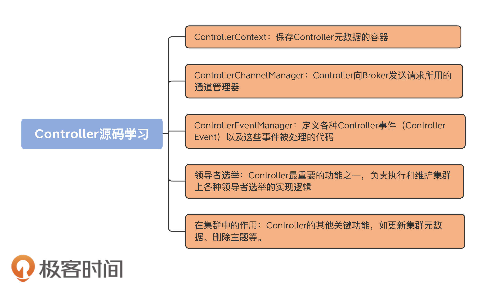
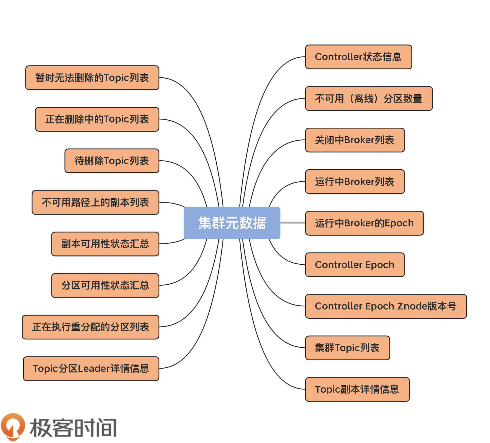

- 00 导读 构建Kafka工程和源码阅读环境、Scala语言热身.md
- 00 开篇词 阅读源码，逐渐成了职业进阶道路上的“必选项”.md
- 00 重磅加餐 带你快速入门Scala语言.md
- 01 日志段：保存消息文件的对象是怎么实现的？.md
- 02 日志（上）：日志究竟是如何加载日志段的？.md
- 03 日志（下）：彻底搞懂Log对象的常见操作.md
- 04 索引（上）：改进的二分查找算法在Kafka索引的应用.md
- 05 索引（下）：位移索引和时间戳索引的区别是什么？.md
- 06 请求通道：如何实现Kafka请求队列？.md
- 07 SocketServer（上）：Kafka到底是怎么应用NIO实现网络通信的？.md
- 08 SocketServer（中）：请求还要区分优先级？.md
- 09 SocketServer（下）：请求处理全流程源码分析.md
- 10 KafkaApis：Kafka最重要的源码入口，没有之一.md
- 11 Controller元数据：Controller都保存有哪些东西？有几种状态？.md
- 12 ControllerChannelManager：Controller如何管理请求发送？.md
- 13 ControllerEventManager：变身单线程后的Controller如何处理事件？.md
- 14 Controller选举是怎么实现的？.md
- 15 如何理解Controller在Kafka集群中的作用？.md
- 16 TopicDeletionManager： Topic是怎么被删除的？.md
- 17 ReplicaStateMachine：揭秘副本状态机实现原理.md
- 18 PartitionStateMachine：分区状态转换如何实现？.md
- 19 TimingWheel：探究Kafka定时器背后的高效时间轮算法.md
- 20 DelayedOperation：Broker是怎么延时处理请求的？.md
- 21 AbstractFetcherThread：拉取消息分几步？.md
- 22 ReplicaFetcherThread：Follower如何拉取Leader消息？.md
- 23 ReplicaManager（上）：必须要掌握的副本管理类定义和核心字段.md
- 24 ReplicaManager（中）：副本管理器是如何读写副本的？.md
- 25 ReplicaManager（下）：副本管理器是如何管理副本的？.md
- 26 MetadataCache：Broker是怎么异步更新元数据缓存的？.md
- 27 消费者组元数据（上）：消费者组都有哪些元数据？.md
- 28 消费者组元数据（下）：Kafka如何管理这些元数据？.md
- 29 GroupMetadataManager：组元数据管理器是个什么东西？.md
- 30 GroupMetadataManager：位移主题保存的只是位移吗？.md
- 31 GroupMetadataManager：查询位移时，不用读取位移主题？.md
- 32 GroupCoordinator：在Rebalance中，Coordinator如何处理成员入组？.md
- 33 GroupCoordinator：在Rebalance中，如何进行组同步？.md
- 特别放送（一）经典的Kafka学习资料有哪些？.md
- 特别放送（三）我是怎么度过日常一天的？.md
- 特别放送（二）一篇文章带你了解参与开源社区的全部流程.md
- 特别放送（五） Kafka 社区的重磅功能：移除 ZooKeeper 依赖.md
- 特别放送（四）20道经典的Kafka面试题详解.md
- 结束语 源码学习，我们才刚上路呢.md
11 Controller元数据：Controller都保存有哪些东西？有几种状态？
你好，我是胡夕。从今天开始，我们正式进入到第三大模块的学习：控制器（Controller）模块 。
提起Kafka中的Controller组件，我相信你一定不陌生。从某种意义上说，它是Kafka最核心的组件。一方面，它要为集群中的所有主题分区选举领导者副本；另一方面，它还承载着集群的全部元数据信息，并负责将这些元数据信息同步到其他Broker上。既然我们是Kafka源码解读课，那就绝对不能错过这么重量级的组件。
我画了一张图片，希望借助它帮你建立起对这个模块的整体认知。今天，我们先学习下Controller元数据。

案例分享
在正式学习源码之前，我想向你分享一个真实的案例。
在我们公司的Kafka集群环境上，曾经出现了一个比较“诡异”的问题：某些核心业务的主题分区一直处于“不可用”状态。
通过使用“kafka-topics”命令查询，我们发现，这些分区的Leader显示是-1。之前，这些Leader所在的Broker机器因为负载高宕机了，当Broker重启回来后，Controller竟然无法成功地为这些分区选举Leader，因此，它们一直处于“不可用”状态。
由于是生产环境，我们的当务之急是马上恢复受损分区，然后才能调研问题的原因。有人提出，重启这些分区旧Leader所在的所有Broker机器——这很容易想到，毕竟“重启大法”一直很好用。但是，这一次竟然没有任何作用。
之后，有人建议升级重启大法，即重启集群的所有Broker——这在当时是不能接受的。且不说有很多业务依然在运行着，单是重启Kafka集群本身，就是一件非常缺乏计划性的事情。毕竟，生产环境怎么能随意重启呢？！
后来，我突然想到了Controller组件中重新选举Controller的代码。一旦Controller被选举出来，它就会向所有Broker更新集群元数据，也就是说，会“重刷”这些分区的状态。
那么问题来了，我们如何在避免重启集群的情况下，干掉已有Controller并执行新的Controller选举呢？答案就在源码中的ControllerZNode.path上，也就是ZooKeeper的/controller节点。倘若我们手动删除了/controller节点，Kafka集群就会触发Controller选举。于是，我们马上实施了这个方案，效果出奇得好：之前的受损分区全部恢复正常，业务数据得以正常生产和消费。
当然，给你分享这个案例的目的，并不是让你记住可以随意干掉/controller节点——这个操作其实是有一点危险的。事实上，我只是想通过这个真实的例子，向你说明，很多打开“精通Kafka之门”的钥匙是隐藏在源码中的。那么，接下来，我们就开始找“钥匙”吧。
集群元数据
想要完整地了解Controller的工作原理，我们首先就要学习它管理了哪些数据。毕竟，Controller的很多代码仅仅是做数据的管理操作而已。今天，我们就来重点学习Kafka集群元数据都有哪些。
如果说ZooKeeper是整个Kafka集群元数据的“真理之源（Source of Truth）”，那么Controller可以说是集群元数据的“真理之源副本（Backup Source of Truth）”。好吧，后面这个词是我自己发明的。你只需要理解，Controller承载了ZooKeeper上的所有元数据即可。
事实上，集群Broker是不会与ZooKeeper直接交互去获取元数据的。相反地，它们总是与Controller进行通信，获取和更新最新的集群数据。而且社区已经打算把ZooKeeper“干掉”了（我会在之后的“特别放送”里具体给你解释社区干掉ZooKeeper的操作），以后Controller将成为新的“真理之源”。
我们总说元数据，那么，到底什么是集群的元数据，或者说，Kafka集群的元数据都定义了哪些内容呢？我用一张图给你完整地展示一下，当前Kafka定义的所有集群元数据信息。

可以看到，目前，Controller定义的元数据有17项之多。不过，并非所有的元数据都同等重要，你也不用完整地记住它们，我们只需要重点关注那些最重要的元数据，并结合源代码来了解下这些元数据都是用来做什么的。
在了解具体的元数据之前，我要先介绍下ControllerContext类。刚刚我们提到的这些元数据信息全部封装在这个类里。应该这么说，这个类是Controller组件的数据容器类。
ControllerContext
Controller组件的源代码位于core包的src/main/scala/kafka/controller路径下，这里面有很多Scala源文件，ControllerContext类就位于这个路径下的ControllerContext.scala文件中。
该文件只有几百行代码，其中，最重要的数据结构就是ControllerContext类。前面说过，它定义了前面提到的所有元数据信息，以及许多实用的工具方法。比如，获取集群上所有主题分区对象的allPartitions方法、获取某主题分区副本列表的partitionReplicaAssignment方法，等等。
首先，我们来看下ControllerContext类的定义，如下所示：
class ControllerContext {
val stats = new ControllerStats // Controller统计信息类
var offlinePartitionCount = 0 // 离线分区计数器
val shuttingDownBrokerIds = mutable.Set.empty[Int] // 关闭中Broker的Id列表
private val liveBrokers = mutable.Set.empty[Broker] // 当前运行中Broker对象列表
private val liveBrokerEpochs = mutable.Map.empty[Int, Long] // 运行中Broker Epoch列表
var epoch: Int = KafkaController.InitialControllerEpoch // Controller当前Epoch值
var epochZkVersion: Int = KafkaController.InitialControllerEpochZkVersion // Controller对应ZooKeeper节点的Epoch值
val allTopics = mutable.Set.empty[String] // 集群主题列表
val partitionAssignments = mutable.Map.empty[String, mutable.Map[Int, ReplicaAssignment]] // 主题分区的副本列表
val partitionLeadershipInfo = mutable.Map.empty[TopicPartition, LeaderIsrAndControllerEpoch] // 主题分区的Leader/ISR副本信息
val partitionsBeingReassigned = mutable.Set.empty[TopicPartition] // 正处于副本重分配过程的主题分区列表
val partitionStates = mutable.Map.empty[TopicPartition, PartitionState] // 主题分区状态列表
val replicaStates = mutable.Map.empty[PartitionAndReplica, ReplicaState] // 主题分区的副本状态列表
val replicasOnOfflineDirs = mutable.Map.empty[Int, Set[TopicPartition]] // 不可用磁盘路径上的副本列表
val topicsToBeDeleted = mutable.Set.empty[String] // 待删除主题列表
val topicsWithDeletionStarted = mutable.Set.empty[String] // 已开启删除的主题列表
val topicsIneligibleForDeletion = mutable.Set.empty[String] // 暂时无法执行删除的主题列表
......
}
不多不少，这段代码中定义的字段正好17个，它们一一对应着上图中的那些元数据信息。下面，我选取一些重要的元数据，来详细解释下它们的含义。
这些元数据理解起来还是比较简单的，掌握了它们之后，你在理解MetadataCache，也就是元数据缓存的时候，就容易得多了。比如，接下来我要讲到的liveBrokers信息，就是Controller通过UpdateMetadataRequest请求同步给其他Broker的MetadataCache的。
ControllerStats
第一个是ControllerStats类的变量。它的完整代码如下：
private[controller] class ControllerStats extends KafkaMetricsGroup {
// 统计每秒发生的Unclean Leader选举次数
val uncleanLeaderElectionRate = newMeter("UncleanLeaderElectionsPerSec", "elections", TimeUnit.SECONDS)
// Controller事件通用的统计速率指标的方法
val rateAndTimeMetrics: Map[ControllerState, KafkaTimer] = ControllerState.values.flatMap { state =>
state.rateAndTimeMetricName.map { metricName =>
state -> new KafkaTimer(newTimer(metricName, TimeUnit.MILLISECONDS, TimeUnit.SECONDS))
}
}.toMap
}
顾名思义，它表征的是Controller的一些统计信息。目前，源码中定义了两大类统计指标：UncleanLeaderElectionsPerSec和所有Controller事件状态的执行速率与时间。
其中，前者是计算Controller每秒执行的Unclean Leader选举数量，通常情况下，执行Unclean Leader选举可能造成数据丢失，一般不建议开启它。一旦开启，你就需要时刻关注这个监控指标的值，确保Unclean Leader选举的速率维持在一个很低的水平，否则会出现很多数据丢失的情况。
后者是统计所有Controller状态的速率和时间信息，单位是毫秒。当前，Controller定义了很多事件，比如，TopicDeletion是执行主题删除的Controller事件、ControllerChange是执行Controller重选举的事件。ControllerStats的这个指标通过在每个事件名后拼接字符串RateAndTimeMs的方式，为每类Controller事件都创建了对应的速率监控指标。
由于Controller事件有很多种，对应的速率监控指标也有很多，有一些Controller事件是需要你额外关注的。
举个例子，IsrChangeNotification事件是标志ISR列表变更的事件，如果这个事件经常出现，说明副本的ISR列表经常发生变化，而这通常被认为是非正常情况，因此，你最好关注下这个事件的速率监控指标。
offlinePartitionCount
该字段统计集群中所有离线或处于不可用状态的主题分区数量。所谓的不可用状态，就是我最开始举的例子中“Leader=-1”的情况。
ControllerContext中的updatePartitionStateMetrics方法根据给定主题分区的当前状态和目标状态，来判断该分区是否是离线状态的分区。如果是，则累加offlinePartitionCount字段的值，否则递减该值。方法代码如下：
// 更新offlinePartitionCount元数据
private def updatePartitionStateMetrics(
partition: TopicPartition,
currentState: PartitionState,
targetState: PartitionState): Unit = {
// 如果该主题当前并未处于删除中状态
if (!isTopicDeletionInProgress(partition.topic)) {
// targetState表示该分区要变更到的状态
// 如果当前状态不是OfflinePartition，即离线状态并且目标状态是离线状态
// 这个if语句判断是否要将该主题分区状态转换到离线状态
if (currentState != OfflinePartition && targetState == OfflinePartition) {
offlinePartitionCount = offlinePartitionCount + 1
// 如果当前状态已经是离线状态，但targetState不是
// 这个else if语句判断是否要将该主题分区状态转换到非离线状态
} else if (currentState == OfflinePartition && targetState != OfflinePartition) {
offlinePartitionCount = offlinePartitionCount - 1
}
}
}
该方法首先要判断，此分区所属的主题当前是否处于删除操作的过程中。如果是的话，Kafka就不能修改这个分区的状态，那么代码什么都不做，直接返回。否则，代码会判断该分区是否要转换到离线状态。如果targetState是OfflinePartition，那么就将offlinePartitionCount值加1，毕竟多了一个离线状态的分区。相反地，如果currentState是offlinePartition，而targetState反而不是，那么就将offlinePartitionCount值减1。
shuttingDownBrokerIds
顾名思义，该字段保存所有正在关闭中的Broker ID列表。当Controller在管理集群Broker时，它要依靠这个字段来甄别Broker当前是否已关闭，因为处于关闭状态的Broker是不适合执行某些操作的，如分区重分配（Reassignment）以及主题删除等。
另外，Kafka必须要为这些关闭中的Broker执行很多清扫工作，Controller定义了一个onBrokerFailure方法，它就是用来做这个的。代码如下：
private def onBrokerFailure(deadBrokers: Seq[Int]): Unit = {
info(s"Broker failure callback for ${deadBrokers.mkString(",")}")
// deadBrokers：给定的一组已终止运行的Broker Id列表
// 更新Controller元数据信息，将给定Broker从元数据的replicasOnOfflineDirs中移除
deadBrokers.foreach(controllerContext.replicasOnOfflineDirs.remove)
// 找出这些Broker上的所有副本对象
val deadBrokersThatWereShuttingDown =
deadBrokers.filter(id => controllerContext.shuttingDownBrokerIds.remove(id))
if (deadBrokersThatWereShuttingDown.nonEmpty)
info(s"Removed ${deadBrokersThatWereShuttingDown.mkString(",")} from list of shutting down brokers.")
// 执行副本清扫工作
val allReplicasOnDeadBrokers = controllerContext.replicasOnBrokers(deadBrokers.toSet)
onReplicasBecomeOffline(allReplicasOnDeadBrokers)
// 取消这些Broker上注册的ZooKeeper监听器
unregisterBrokerModificationsHandler(deadBrokers)
}
该方法接收一组已终止运行的Broker ID列表，首先是更新Controller元数据信息，将给定Broker从元数据的replicasOnOfflineDirs和shuttingDownBrokerIds中移除，然后为这组Broker执行必要的副本清扫工作，也就是onReplicasBecomeOffline方法做的事情。
该方法主要依赖于分区状态机和副本状态机来完成对应的工作。在后面的课程中，我们会专门讨论副本状态机和分区状态机，这里你只要简单了解下它要做的事情就行了。后面等我们学完了这两个状态机之后，你可以再看下这个方法的具体实现原理。
这个方法的主要目的是把给定的副本标记成Offline状态，即不可用状态。具体分为以下这几个步骤：
- 利用分区状态机将给定副本所在的分区标记为Offline状态；
- 将集群上所有新分区和Offline分区状态变更为Online状态；
- 将相应的副本对象状态变更为Offline。
liveBrokers
该字段保存当前所有运行中的Broker对象。每个Broker对象就是一个<Id，EndPoint，机架信息>的三元组。ControllerContext中定义了很多方法来管理该字段，如addLiveBrokersAndEpochs、removeLiveBrokers和updateBrokerMetadata等。我拿updateBrokerMetadata方法进行说明，以下是源码：
def updateBrokerMetadata(oldMetadata: Broker, newMetadata: Broker): Unit = {
liveBrokers -= oldMetadata
liveBrokers += newMetadata
}
每当新增或移除已有Broker时，ZooKeeper就会更新其保存的Broker数据，从而引发Controller修改元数据，也就是会调用updateBrokerMetadata方法来增减Broker列表中的对象。怎么样，超简单吧？！
liveBrokerEpochs
该字段保存所有运行中Broker的Epoch信息。Kafka使用Epoch数据防止Zombie Broker，即一个非常老的Broker被选举成为Controller。
另外，源码大多使用这个字段来获取所有运行中Broker的ID序号，如下面这个方法定义的那样：
def liveBrokerIds: Set[Int] = liveBrokerEpochs.keySet -- shuttingDownBrokerIds
liveBrokerEpochs的keySet方法返回Broker序号列表，然后从中移除关闭中的Broker序号，剩下的自然就是处于运行中的Broker序号列表了。
epoch & epochZkVersion
这两个字段一起说，因为它们都有“epoch”字眼，放在一起说，可以帮助你更好地理解两者的区别。epoch实际上就是ZooKeeper中/controller_epoch节点的值，你可以认为它就是Controller在整个Kafka集群的版本号，而epochZkVersion实际上是/controller_epoch节点的dataVersion值。
Kafka使用epochZkVersion来判断和防止Zombie Controller。这也就是说，原先在老Controller任期内的Controller操作在新Controller不能成功执行，因为新Controller的epochZkVersion要比老Controller的大。
另外，你可能会问：“这里的两个Epoch和上面的liveBrokerEpochs有啥区别呢？”实际上，这里的两个Epoch值都是属于Controller侧的数据，而liveBrokerEpochs是每个Broker自己的Epoch值。
allTopics
该字段保存集群上所有的主题名称。每当有主题的增减，Controller就要更新该字段的值。
比如Controller有个processTopicChange方法，从名字上来看，它就是处理主题变更的。我们来看下它的代码实现，我把主要逻辑以注释的方式标注了出来：
private def processTopicChange(): Unit = {
if (!isActive) return // 如果Contorller已经关闭，直接返回
val topics = zkClient.getAllTopicsInCluster(true) // 从ZooKeeper中获取当前所有主题列表
val newTopics = topics -- controllerContext.allTopics // 找出当前元数据中不存在、ZooKeeper中存在的主题，视为新增主题
val deletedTopics = controllerContext.allTopics -- topics // 找出当前元数据中存在、ZooKeeper中不存在的主题，视为已删除主题
controllerContext.allTopics = topics // 更新Controller元数据
// 为新增主题和已删除主题执行后续处理操作
registerPartitionModificationsHandlers(newTopics.toSeq)
val addedPartitionReplicaAssignment = zkClient.getFullReplicaAssignmentForTopics(newTopics)
deletedTopics.foreach(controllerContext.removeTopic)
addedPartitionReplicaAssignment.foreach {
case (topicAndPartition, newReplicaAssignment) => controllerContext.updatePartitionFullReplicaAssignment(topicAndPartition, newReplicaAssignment)
}
info(s"New topics: [$newTopics], deleted topics: [$deletedTopics], new partition replica assignment " +
s"[$addedPartitionReplicaAssignment]")
if (addedPartitionReplicaAssignment.nonEmpty)
onNewPartitionCreation(addedPartitionReplicaAssignment.keySet)
}
partitionAssignments
该字段保存所有主题分区的副本分配情况。在我看来，这是Controller最重要的元数据了。事实上，你可以从这个字段衍生、定义很多实用的方法，来帮助Kafka从各种维度获取数据。
比如，如果Kafka要获取某个Broker上的所有分区，那么，它可以这样定义：
partitionAssignments.flatMap {
case (topic, topicReplicaAssignment) => topicReplicaAssignment.filter {
case (_, partitionAssignment) => partitionAssignment.replicas.contains(brokerId)
}.map {
case (partition, _) => new TopicPartition(topic, partition)
}
}.toSet
再比如，如果Kafka要获取某个主题的所有分区对象，代码可以这样写：
partitionAssignments.getOrElse(topic, mutable.Map.empty).map {
case (partition, _) => new TopicPartition(topic, partition)
}.toSet
实际上，这两段代码分别是ControllerContext.scala中partitionsOnBroker方法和partitionsForTopic两个方法的主体实现代码。
讲到这里，9个重要的元数据字段我就介绍完了。前面说过，ControllerContext中一共定义了17个元数据字段，你可以结合这9个字段，把其余8个的定义也过一遍，做到心中有数。你对Controller元数据掌握得越好，就越能清晰地理解Controller在集群中发挥的作用。
值得注意的是，在学习每个元数据字段时，除了它的定义之外，我建议你去搜索一下，与之相关的工具方法都是如何实现的。如果后面你想要新增获取或更新元数据的方法，你要对操作它们的代码有很强的把控力才行。
总结
今天，我们揭开了Kafka重要组件Controller的学习大幕。我给出了Controller模块的学习路线，还介绍了Controller的重要元数据。
- Controller元数据：Controller当前定义了17种元数据，涵盖Kafka集群数据的方方面面。
- ControllerContext：定义元数据以及操作它们的类。
- 关键元数据字段：最重要的元数据包括offlinePartitionCount、liveBrokers、partitionAssignments等。
- ControllerContext工具方法：ControllerContext 类定义了很多实用方法来管理这些元数据信息。
下节课，我们将学习Controller是如何给Broker发送请求的。Controller与Broker进行交互与通信，是Controller奠定王者地位的重要一环，我会向你详细解释它是如何做到这一点的。
课后讨论
我今天并未给出所有的元数据说明，请你自行结合代码分析一下，partitionLeadershipInfo里面保存的是什么数据？
欢迎你在留言区写下你的思考和答案，跟我交流讨论，也欢迎你把今天的内容分享给你的朋友。
© 2019 - 2023 Liangliang Lee. Powered by Vert.x and hexo-theme-book.